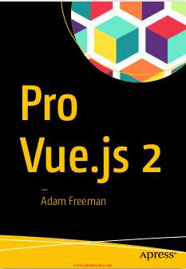
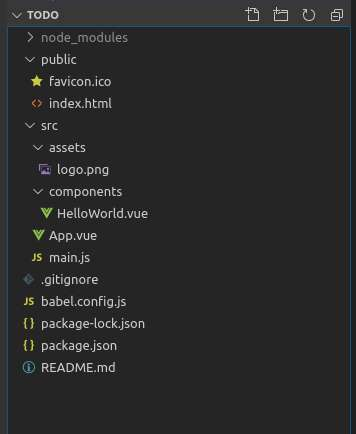
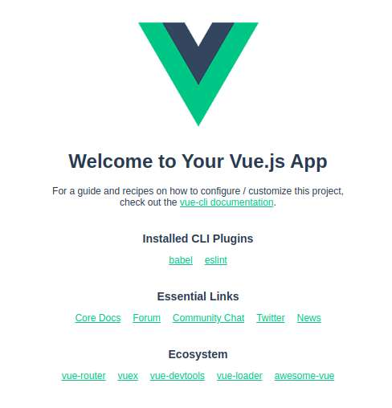
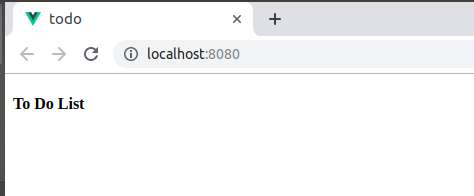
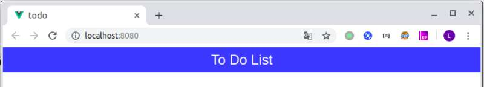
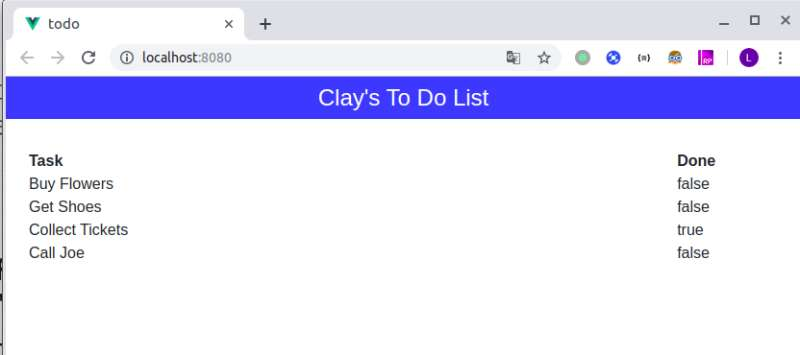
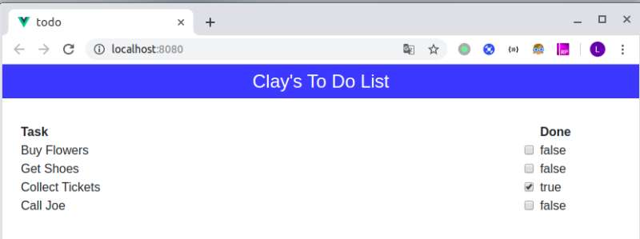
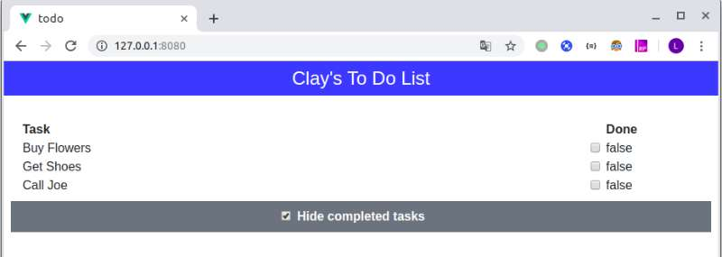
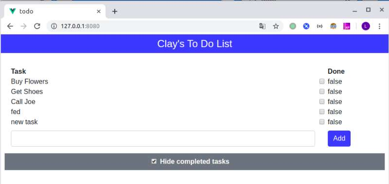
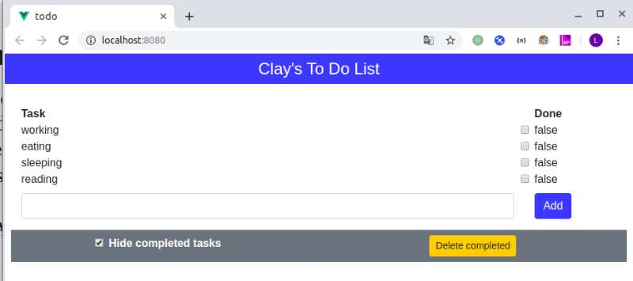

我又挖坑啦～～～，开始《pro vue.js 2》学习笔记。一直想学 vue，也不停地重复写 vue 的 hello world，总是没能系统性地深入学习。emmm，不废话了，加油吧。
3
pro vue.js 2 封面：

正文
Part 1 Getting started with vue.js
Chapter 1: Your first Vue.js Application P
本章是是写 vue 版本的 helloworld，Todo List。初步摸清 Vue 项目结构，开发流程与一些基本语法。
准备开发环境
node npm 的安装
Ubuntu 安装 node.js
1 | $ sudo apt-get install nodejs |
Ubuntu 安装 npm
1 | $ sudo apt-get install npm |
查看 node.js，npm 版本
1 | $ node -v |
我当前 node.js 版本是 v8.10.0，npm 版本是 3.5.2。原书教程是 node.js v8.11.2、npm 5.6.0。为避免不必要的版本问题，也和书上弄成一样吧。
node.js 版本升级，先安装 n
1 | $ sudo npm install -g n |
升级 node.js 到书上的 8.11.2
1 | $ sudo n v8.11.2 |
npm 更新到书上的 5.6.0
1 | $ sudo npm -g install npm@5.6.0 |
再用 node -v 和 npm -v 确认下版本是否更新了呢？如果没有，记得另外开个 shell 终端看下呢。
安装 ＠vue/cli 包
关于这个包，书上这么说的
在开发过程中，利用 @vue/cli 包去创建和管理 vue.js 项目是一种标准方法。当然，你也不是非用不可，但是它确实很贴心地为你提供了开发 vue.js 项目的一切便利，我也会在全书中用它。
原文：
The @vue/cli package is the standard way to create and manage Vue.js projects during development. You don’t have to use this package, but it provides everything that is needed to get started with Vue.js, and I use it throughout this book.
来吧，让我们安装上它
1 | $ sudo npm install --global @vue/cli |
安装 Git
已经安装过 git，就跳过吧。
ubuntu 安装 git
1 | $ sudo apt-get install git |
确认 git 版本
1 | $ git --version |
安装编辑器
额。。。用自己喜欢的就好，我用 Visual Studio Code。之前一直抵制微软的东西，emmm…真香~
安装 Browser
书上建议用 Chrome 和 Firfox，作者全书用的 Chrome，follow 就好了。
之所以推荐这两个是因为：
All the current-generation browsers have good developer support and work well with Vue.js, but there is a useful extension for Chrome and Firefox called vue-devtools that provides insights into the state of a Vue.js application and that is especially useful in complex projects. See https://github.com/vuejs/vue-devtools for details of installing the extension, which I use in later chapters.
创建项目
总于可以创建项目啦
1 | $ vue create todo --default |
理解项目结构
在 vscode 中有如下结构，不同编辑器，稍有不同。

项目中一些重要的文件
| 文件名 | 描述 |
|---|---|
| public/index.html | 一个会被浏览器加载的 HTML 文件，app 会在它一个元素中显示，同时 script 元素会加载 app 的相关文件。 |
| src/main.js | 一个 js 文件，负责对 vue.js app 进行配置。它也用于对要依赖的第三方包进行注册。 |
| src/App.vue | vue.js 的组件，包括了会展现给用户的 HTML 内容、HTML 所需要的 js 代码、渲染元素的 CCS。在 Vue 中，组件 components 是主要的构建单元。 |
| src/assets/logo.png | assets 文件夹被用来存储静态内容，例如图片等。在新建项目时，里面的 logo.png 是 vue.js logo 图片。 |
启动项目( starting the development tolls)
当用 vue 命令创建了项目后，一个完整的工具集也就安装上了。我们就可以用这些工具对项目工程进行编译、打包、发布到浏览器。用如下命令，启动项目：
1 | $ cd todo |
不出意外，运行起来后打开 http://localhost:8080/ 就可以看到 vue 的欢迎界面了。

替换占位的内容 replaceing the placeholder content
在 App.vue 这个文件中，可以看到三个块区，分别是：
- template: HTML 内容
- script: js 代码区
- style: CSS 样式代码区
每个 vue 组件（扩展名为.vue）都是这种结构，不同层次的 vue 组件可以相互嵌套，形成树型结构，汇总到 src/App.vue 这个组件。最后通过 sr/main.js 导入到前面介绍的 public/index.html 中，渲染成最终的 HTML 页面。简洁、清晰、优美，正是我陶醉于 vue 的原因啊。
将 App.vue 中的内容替换掉如下代码：
1 | <template> |
如果之前的项目启动之后没有退出，vue 会自动更新，有图片的欢迎页面变成一个简单页面：

添加 CSS 框架
本书用 bootstrap@4.0.0，在命令行中输入：
1 | $ npm install bootstrap@4.0.0 |
安装过程中如果出现警告，可以忽略。为了把 bootstrap 引入到项目中，我们需要修改 src/main.js 文件：
1 | import Vue from 'vue' |
对 HTML 元素添加样式
利用 boostrap 来作为 CSS 框架，利于快速构建组件，把重心放在 js 逻辑上。这里对 ‘To Do List’ 添加样式：
1 | <template> |
终于看见彩色的了：

添加动态内容
新知识点： text interpolation binding 文本插入绑定？
接下来就是往里面添加一些数据，并且能动态展示出来。这里要引入 vue 的模板语法，和Django 好像呀。继续修改 App.vue:
1 | <template> |
修改之后， 就根据 script 中定义的 name 来动态显示，就不截图了。
展示任务列表
新知识点： v-for, v-for
继续修改 App.vue:
1 | <template> |
这个得截下图：

以 v- 开头的 html 特殊属性在 vue 中称作 directive，姑且翻译为 指令。
v-for: 我们通过 v-for 实现了只用一个 html 元素显示多个并列数据的功能。t in tasks 是为了从tasks中循环取出单个 item, 以便访问里面的数据，和 python 语法简直一模一样啊。
v-bind: 没怎么弄明白，书上说也是一个指令，它用来辅助 v-for 对列表中每个对象进行追踪。（像索引一样？）
添加勾选框
为了让人能输入任务是否完成的信息，在 之前添加勾选框：
1 | <div class="col-2"> |
为节省版面，只粘贴局部的代码，之后页面刷新为：

点击一下，后面的布尔值也会随之变化。
v-model: 这个指令配置在 input 元素中，它会使勾选框依据它的表达式的值来显示，同时如果对 input 进行勾选/取消勾选，v-model 绑定的表达式的值也会随之变化。也就是说，通过 v-model 实现了数据的双向绑定, 显示层<=>js中的数据层 能相互交互。
过滤已完成的任务
这里期望加一个控件，能让人控制任务清单是否显示已经完成了的。

template 涉及两处改动：
- 用于循环取列表数据的 v-for 指令需要重新绑定，之前绑定 data 中原始数据 tasks，现在更改为 computed 的 filteredTasks
- 在下方添加一个 input checkbox 并且用 v-model 绑定到 data 中的一个布尔变量 hideCompleted 用于将用户输入传到 js 中
script 中涉及两处增加：
- data 中添加布尔变量 hideCompleted，用于接收存储用户的控制动作，默认为 true
- 增加 computed 并在其中添加一个 filterTasks 函数，用于依据 hideCompleted 来控制输出（是否过滤）
代码如下：
1 | <template> |
这里岔一句，书中在这里用了一个 label 标签，但是貌似没有起作用。label 的用意应该是点击 label 区域时，能等效点击和它绑定的控件。为了让 label 起作用，我修改了原书代码：
1 | <div class="row bg-secondary py-2 mt-2 text-white"> |
创建新任务
书上说了，一个 to-do app 如果不能让用户去添加新任务，那就没啥用处。所以我们要加个能让用户创建新任务的功能。
template 添加输入框和提交按钮：
1 | <div class="row py-2"> |
script 在 data 中添加一个字符串变量 newItemText 用来存储输入框内容，新建 methods addNewTodo 用来相应提交按钮的点击：
1 | <script> |
v-on 指令用于响应时间，在这里，当我们点击 add 按钮时，我们用 v-on 告诉 vue.js 去唤醒 addNewTodo 方法，把输入框中的数据（其实这时候已经存在 data 中了）推入到 data 的 tasks 的列表中了。
效果如下图，其中后两项是通过 input 手输的:

数据持久化
到目前为止，我们的 app 只能将数据保存在内存中，当重启浏览器后，之前的信息将消失。在没有后端支持的情况下，我们可以利用游览器来进行数据的持久化。
为此，需修改相关 js：
1 | <script> |
涉及三处改动：
- 在 data 中将 tasks 置空
- 在负责处理添加任务的函数中添加本地存储命令，也就是说每增加一个任务就做一次持久化
- 增加 created 函数，推测是初始化的时候会调用这个
注意：
localStorage 对象并不是在 vue 中特有的，这是个标准的 js 对象，对所有 web 应用都适用，无论你在哪里写的。
添加清除已完成任务的功能
好不容易，快结尾啦。最后我们希望加两个功能：
- 当任务列表长度为零时，显示 Nothing to od. Hurrah! 提示
- 添加一个按钮，让用户可以对已完成任务进行删除
为此代码需要作如下修改：
1 | <template> |
新知识点:
v-if 和 v-else, 不解释，用来按照条件判断显示哪一部分的 template
最终效果如下，休息一下吧

小结
在这一章中，我们利用 vue 创建了一个简单的 app 示例，来展示 vue 是如何工作的。尽管功能比较简单，但足以阐释一些 vue 中重要的相关概念。
- vue 是由一系列的组件构造出来的，每个组件包括 HTML、js、CSS
- 每个组件的 js，又可以细分为不同部分，比如 data、methods、computed等
- HTML 通过一些关键字，如
v-if、v-else、v-for、v-bind、v-on、v-model等，来实现与 js 的交互
总结
写了两天，终于写完了。边看书，边敲代码实现看页面，边思考，边写博客。对自己而言，还是不错的，比单纯自己敲一遍代码效果确实要好。要继续加油鸭～